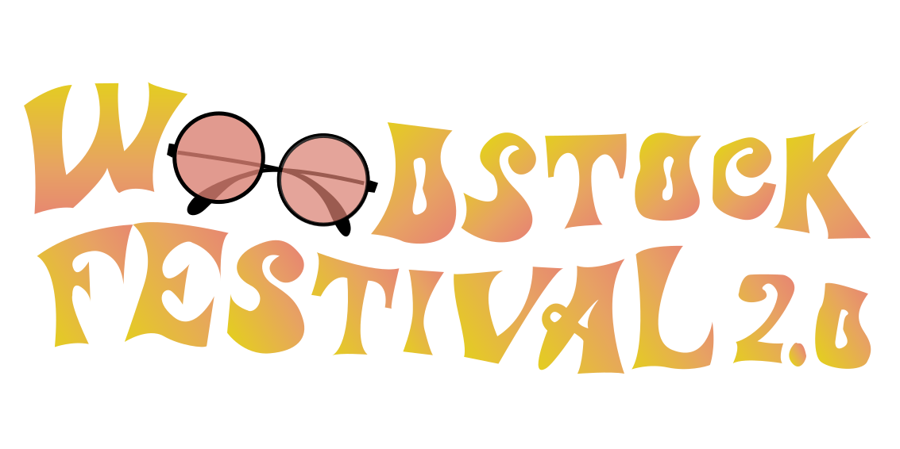

HOME
ARTIESTEN
VERVOER
CAMPING
TICKETS

Mijn tekst bestaat vooral uit de standaard lettertypes zodat de site rap zou laden voor iedereen. De titels dragen de naam 'Futura Condensed Medium', de ondertitels bestaan uit het lettertype 'Roboto Regular' wat dus mijn verplicht lettertype is en staan iedere keer volledig in drukletters. Mijn gewone, doorlopende tekst heeft als lettertype Helvetica Neue light en dan heb ik nog één quote op mijn site dat ik ook wel extra in de kijker wil zetten door het een ander lettertype te gevene, namelijk 'Bradley Hand'.
| Lettertype | Functie | Corpsgrootte | Interlinie |
|---|---|---|---|
| Futura Condensed Medium | Titel | ||
| Roboto Regular | Ondertitel | ||
| Helvetica Neue light | Doorlopende tekst | ||
| Bradley Hand | Quote |
We zien 3 relatief warme kleuren en een koude kleur. Dat is op zich meestal al een mooi en geslaagd contrast. Daarbij heb ik er ook nog groen bijgesmeten omdat het wat duidt op de natuur. Op de bossen waarin we ons zullen bevinden en het festival vieren. Samen vormen ze een vrolijk kleurenpalet.
| Subjectieve kleur | RBG | Hex | HSL |
|---|---|---|---|
| Blauw | rgb(76,110,205) | #4c6ecd | hsl(224, 56%, 55%) |
| Donker groen | rgb(34,119,5) | #227705 | hsl(105, 91,9%, 24.3%) |
| Gebroken wit | rgb(242,236,213) | #f2ecd5 | hsl(48, 52,7%, 89.2%) |
| Oker | rgb(225,179,58) | #e1b305 | hsl(47, 95.7%, 45,1%) |
| Licht oranje | rgb(227,138,90) | #e38a5a | hsl(21, 71%, 62.2%) |
Mijn logo is een woordlogo, opgebouwd uit de 'hippie letters'. Het schenkt herkendaarheid van de hippiejaren en kan op deze manier al een soort reclame op zich zijn. De zonnebril vervangt de twee O's en is een leuk grafisch elementje dat nog eens verwijst naar die tijd. De kleuren waaruit het is opgebouwd zijn het licht oranje en oker van hierboven, met een verloop. Het is volledig zelfgemaakt in illustrator.
Het print- en muziek icoontje zouden dat ik gemaakt heb, zouden een ander kleurtje moeten krijgen iedere keer als men er over gaat met de muis.

Mijn knoppen in de navigatiebalk zien er als volgt uit:
HOME
ARTIESTEN
VERVOER
CAMPING
TICKETS
De padding en margin bedragen: Ook de foto's, bij de artiesten, zijn eigenlijk knoppen en als men er op drukt, komt men terecht op de pagina met wat informatie over de artiest/band. Ook die moeten een andere kleur krijgen als men erover gaat, met eventueel 'Meer info'.
Alle illustraties hebben een hoogte van max 350px